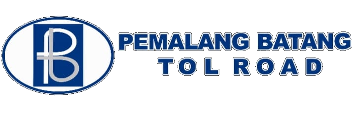
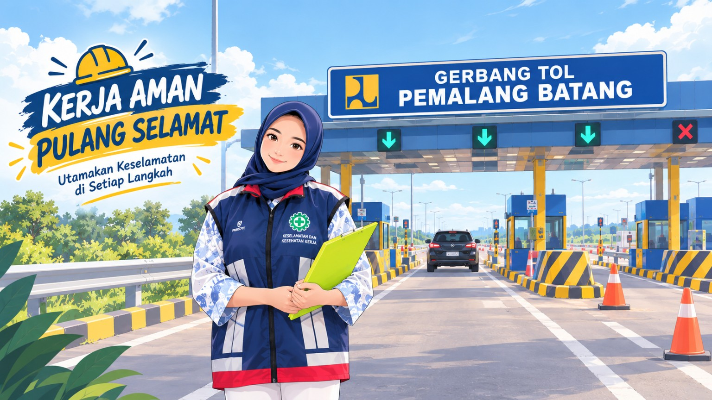

Mendukung penguatan budaya keselamatan melalui Safety Walk yang terintegrasi, terstruktur, dan terdokumentasi. Catat temuan K3, pantau tindak lanjut, dan kelola hasil Safety Walk secara lebih efektif.
Mulai Safety Walk →
Mendokumentasikan temuan K3 secara sistematis berdasarkan hasil kegiatan Safety Walk.
Membantu memantau status tindak lanjut setiap temuan hingga proses penyelesaiannya.
Menyajikan hasil kegiatan Safety Walk secara ringkas untuk memudahkan pemantauan.
Catat kegiatan dan temuan keselamatan kerja selama pelaksanaan Safety Walk.
Pantau perkembangan temuan dan tindak lanjut hasil Safety Walk.
Temuan yang tercatat
Temuan yang masih diproses
Temuan yang telah ditindaklanjuti
Tahapan sederhana dalam melaksanakan dan mendokumentasikan kegiatan Safety Walk.
Tentukan waktu, lokasi, personel yang terlibat, serta perlengkapan keselamatan yang diperlukan.
Amati kondisi lingkungan kerja, penggunaan APD, peralatan, perilaku kerja, dan potensi bahaya.
Dokumentasikan temuan secara jelas dan kategorikan sesuai jenis kondisi yang ditemukan.
Tentukan tindakan korektif atau rekomendasi untuk mengendalikan risiko yang ditemukan.
Pastikan tindakan perbaikan dipantau sampai temuan dinyatakan selesai.
Ringkasan hasil kegiatan dan temuan Safety Walk.
Digital Safety Walk PBTR merupakan media digital yang dirancang untuk mendukung proses pencatatan, pemantauan, dan dokumentasi temuan Keselamatan dan Kesehatan Kerja (K3) dalam kegiatan Safety Walk di lingkungan PT Pemalang Batang Toll Road.